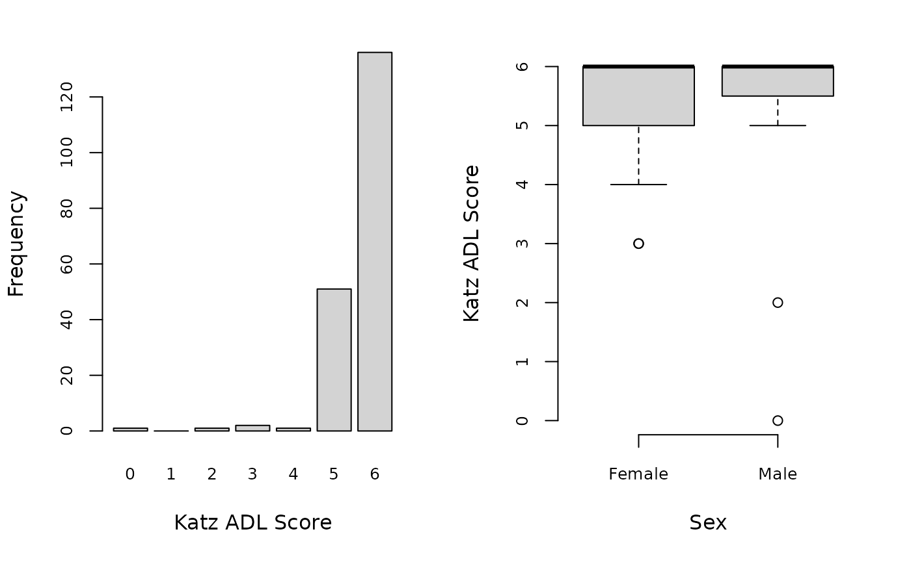

#> Error in get(paste0(generic, ".", class), envir = get_method_env()) :
#> object 'type_sum.accel' not foundThe RAM-OP Workflow is summarised in the diagram below.

The oldr package provides functions to use for all steps
after data collection. These functions were developed specifically for
the data structure created by the EpiData
or the Open Data
Kit collection tools. The data structure produced by these
collection tools is shown by the dataset testSVY included
in the oldr package.
testSVY
#> # A tibble: 192 × 90
#> ad2 psu hh id d1 d2 d3 d4 d5 f1 f2a f2b f2c
#> <int> <int> <int> <int> <int> <int> <int> <int> <int> <int> <int> <int> <int>
#> 1 1 201 1 1 1 67 2 5 2 3 2 1 1
#> 2 1 201 2 1 1 74 1 2 2 3 2 1 1
#> 3 1 201 3 1 1 60 1 2 2 2 2 2 2
#> 4 1 201 3 2 1 60 2 2 2 3 2 2 1
#> 5 1 201 4 1 1 85 2 5 2 3 2 1 1
#> 6 1 201 5 1 2 86 1 5 1 4 2 1 1
#> 7 1 201 6 1 1 80 1 5 2 3 2 1 1
#> 8 1 201 6 2 1 60 2 5 2 3 2 2 1
#> 9 1 201 7 1 1 62 1 2 2 2 2 1 1
#> 10 1 201 8 1 1 72 2 5 2 2 2 1 1
#> # ℹ 182 more rows
#> # ℹ 77 more variables: f2d <int>, f2e <int>, f2f <int>, f2g <int>, f2h <int>,
#> # f2i <int>, f2j <int>, f2k <int>, f2l <int>, f2m <int>, f2n <int>,
#> # f2o <int>, f2p <int>, f2q <int>, f2r <int>, f2s <int>, f3 <int>, f4 <int>,
#> # f5 <int>, f6 <int>, f7 <int>, a1 <int>, a2 <int>, a3 <int>, a4 <int>,
#> # a5 <int>, a6 <int>, a7 <int>, a8 <int>, k6a <int>, k6b <int>, k6c <int>,
#> # k6d <int>, k6e <int>, k6f <int>, ds1 <int>, ds2 <int>, ds3 <int>, …Processing and recoding data
Once RAM-OP data is collected, it will need to be processed and
recoded based on the definitions of the various indicators included in
RAM-OP. The oldr package provides a suite functions to
perform this processing and recoding. These functions and their syntax
can be easily remembered as the create_op_ functions as
their function names start with the create_ verb followed
by the op_ label and then followed by an indicator or
indicator set specific identifier or short name. Finally, an additional
tag for male or female can be added to the
main function to provide gender-specific outputs.
Currently, a standard RAM-OP can provide results for the 13 indicators or indicator sets for older people. The following table shows these indicators/indicator sets alongside the functions related to them:
| Indicator / Indicator Set | Related Functions |
|---|---|
| Demography and situation |
create_op_demo;
create_op_demo_males;
create_op_demo_females
|
| Food intake |
create_op_food;
create_op_food_males;
create_op_food_females
|
| Severe food insecurity |
create_op_hunger;
create_op_hunger_males;
create_op_hunger_females
|
| Disability |
create_op_disability;
create_op_disability_males;
create_op_disability_females
|
| Activities of daily living |
create_op_adl;
create_op_adl_males;
create_op_adl_females
|
| Mental health and well-being |
create_op_mental;
create_op_mental_males;
create_op_mental_females
|
| Dementia |
create_op_dementia;
create_op_dementia_males;
create_op_dementia_females
|
| Health and health-seeking behaviour |
create_op_health;
create_op_health_males;
create_op_health_females
|
| Sources of income |
create_op_income;
create_op_income_males;
create_op_income_females
|
| Water, sanitation, and hygiene |
create_op_wash;
create_op_wash_males;
create_op_wash_females
|
| Anthropometry and anthropometric screening coverage |
create_op_anthro;
create_op_anthro_males;
create_op_anthro_females
|
| Visual impairment |
create_op_visual;
create_op_visual_males;
create_op_visual_females
|
| Miscellaneous |
create_op_misc;
create_op_misc_males;
create_op_misc_females
|
A final function in the processing and recoding set -
create_op_all - is provided to perform the processing and
recoding of all indicators or indicator sets. This function allows for
the specification of which indicators or indicator sets to process and
recode which is useful for cases where not all the indicators or
indicator sets have been collected or if only specific indicators or
indicator sets need to be analysed or reported. This function also
specifies whether a specific gender subset of the data is needed.
For a standard RAM-OP implementation, this step is performed in R as follows:
## Process and recode all standard RAM-OP indicators in the testSVY dataset
create_op_all(svy = testSVY)which results in the following output:
#> # A tibble: 192 × 138
#> psu sex1 sex2 resp1 resp2 resp3 resp4 age ageGrp1 ageGrp2 ageGrp3
#> <int> <dbl> <dbl> <dbl> <dbl> <dbl> <dbl> <int> <dbl> <dbl> <dbl>
#> 1 201 0 1 1 0 0 0 67 0 1 0
#> 2 201 1 0 1 0 0 0 74 0 0 1
#> 3 201 1 0 1 0 0 0 60 0 1 0
#> 4 201 0 1 1 0 0 0 60 0 1 0
#> 5 201 0 1 1 0 0 0 85 0 0 0
#> 6 201 1 0 0 1 0 0 86 0 0 0
#> 7 201 1 0 1 0 0 0 80 0 0 0
#> 8 201 0 1 1 0 0 0 60 0 1 0
#> 9 201 1 0 1 0 0 0 62 0 1 0
#> 10 201 0 1 1 0 0 0 72 0 0 1
#> # ℹ 182 more rows
#> # ℹ 127 more variables: ageGrp4 <dbl>, ageGrp5 <dbl>, marital1 <dbl>,
#> # marital2 <dbl>, marital3 <dbl>, marital4 <dbl>, marital5 <dbl>,
#> # marital6 <dbl>, alone <dbl>, MF <dbl>, DDS <dbl>, FG01 <dbl>, FG02 <dbl>,
#> # FG03 <dbl>, FG04 <dbl>, FG05 <dbl>, FG06 <dbl>, FG07 <dbl>, FG08 <dbl>,
#> # FG09 <dbl>, FG10 <dbl>, FG11 <dbl>, proteinRich <dbl>, pProtein <dbl>,
#> # aProtein <dbl>, pVitA <dbl>, aVitA <dbl>, xVitA <dbl>, ironRich <dbl>, …Estimating indicators
Once data has been processed and appropriate recoding for indicators has been performed, indicator estimates can now be calculated.
It is important to note that estimation procedures need to account for the sample design. All major statistical analysis software can do this (details vary). There are two things to note:
The RAM-OP sample is a two-stage sample. Subjects are sampled from a small number of primary sampling units (PSUs).
The RAM-OP sample is not prior weighted. This means that per-PSU sampling weights are needed. These are usually the populations of the PSU.
This sample design will need to be specified to statistical analysis software being used. If no weights are provided, then the analysis may produce estimates that place undue weight to observations from smaller communities with confidence intervals with lower than nominal coverage (i.e. they will be too narrow).
Blocked weighted bootstrap
The oldr package uses blocked weighted
bootstrap estimation approach:
Blocked : The block corresponds to the PSU or cluster.
Weighted : The RAM-OP sampling procedure does not use population proportional sampling to weight the sample prior to data collection as is done with SMART type surveys. This means that a posterior weighting procedure is required. The standard RAM-OP software uses a “roulette wheel” algorithm to weight (i.e. by population) the selection probability of PSUs in bootstrap replicates.
A total of m PSUs are sampled with-replacement from the
survey dataset where m is the number of PSUs in the survey
sample. Individual records within each PSU are then sampled
with-replacement. A total of n records are sampled
with-replacement from each of the selected PSUs where n is
the number of individual records in a selected PSU. The resulting
collection of records replicates the original survey in terms of both
sample design and sample size. A large number of replicate surveys are
taken (the standard RAM-OP software uses
replicate surveys but this can be changed). The required statistic
(e.g. the mean of an indicator value) is applied to each replicate
survey. The reported estimate consists of the 50th (point estimate),
2.5th (lower 95% confidence limit), and the 97.5th (upper 95% confidence
limit) percentiles of the distribution of the statistic observed across
all replicate surveys. The blocked weighted bootstrap procedure is
outlined in the figure below.

The principal advantages of using a bootstrap estimator are:
Bootstrap estimators work well with small sample sizes.
The method is non-parametric and uses empirical rather than theoretical distributions. There are no assumptions of things like normality to worry about.
The method allows estimation of the sampling distribution of almost any statistic using only simple computational methods.
PROBIT estimator
The prevalence of GAM, MAM, and SAM are estimated using a PROBIT estimator. This type of estimator provides better precision than a classic estimator at small sample sizes as discussed in the following literature:
World Health Organisation, Physical Status: The use and interpretation of anthropometry. Report of a WHO expert committee, WHO Technical Report Series 854, WHO, Geneva, 1995
Dale NM, Myatt M, Prudhon C, Briend, A, “Assessment of the PROBIT approach for estimating the prevalence of global, moderate and severe acute malnutrition from population surveys”, Public Health Nutrition, 1–6. https://doi.org/10.1017/s1368980012003345, 2012
Blanton CJ, Bilukha, OO, “The PROBIT approach in estimating the prevalence of wasting: revisiting bias and precision”, Emerging Themes in Epidemiology, 10(1), 2013, p. 8
An estimate of GAM prevalence can be made using a classic estimator:
On the other hand, the estimate of GAM prevalence made from the RAM-OP survey data is made using a PROBIT estimator. The PROBIT function is also known as the inverse cumulative distribution function. This function converts parameters of the distribution of an indicator (e.g. the mean and standard deviation of a normally distributed variable) into cumulative percentiles. This means that it is possible to use the normal PROBIT function with estimates of the mean and standard deviation of indicator values in a survey sample to predict (or estimate) the proportion of the population falling below a given threshold. For example, for data with a mean MUAC of 256 mm and a standard deviation of 28 mm the output of the normal PROBIT function for a threshold of 210 mm is 0.0502 meaning that 5.02% of the population are predicted (or estimated) to fall below the 210 mm threshold.
Both the classic and the PROBIT methods can be thought of as estimating area:

The principal advantage of the PROBIT approach is that the required sample size is usually smaller than that required to estimate prevalence with a given precision using the classic method.
The PROBIT method assumes that MUAC is a normally distributed variable. If this is not the case then the distribution of MUAC is transformed towards normality.
The prevalence of SAM is estimated in a similar way to GAM. The prevalence of MAM is estimated as the difference between the GAM and SAM prevalence estimates:
Classic estimator
The function estimateClassic in oldr
implements the blocked weighted bootstrap classic estimator of RAM-OP.
This function uses the bootClassic statistic to estimate
indicator values.
The estimateClassic function is used for all the
standard RAM-OP indicators except for anthropometry. The function is
used as follows:
## Process and recode RAM-OP data (testSVY)
df <- create_op_all(svy = testSVY)
## Perform classic estimation on recoded data using appropriate weights provided by testPSU
classicDF <- estimate_classic(x = df, w = testPSU)This results in (using limited replicates to reduce computing time):
#> # A tibble: 136 × 10
#> INDICATOR EST.ALL LCL.ALL UCL.ALL EST.MALES LCL.MALES UCL.MALES EST.FEMALES
#> <chr> <dbl> <dbl> <dbl> <dbl> <dbl> <dbl> <dbl>
#> 1 resp1 0.859 0.794 0.880 0.803 0.743 0.835 0.849
#> 2 resp2 0.0885 0.075 0.152 0.1 0.0308 0.125 0.123
#> 3 resp3 0.0417 0.0219 0.0729 0.0658 0.0309 0.166 0.0169
#> 4 resp4 0 0 0.0229 0.0132 0 0.0889 0.00826
#> 5 age 70.7 69.4 72.1 71.0 69.3 72.5 71.1
#> 6 ageGrp1 0 0 0 0 0 0 0
#> 7 ageGrp2 0.536 0.441 0.586 0.470 0.423 0.609 0.517
#> 8 ageGrp3 0.229 0.181 0.328 0.325 0.211 0.380 0.218
#> 9 ageGrp4 0.198 0.123 0.277 0.153 0.0890 0.268 0.272
#> 10 ageGrp5 0.0365 0.0219 0.0573 0.0488 0.0236 0.0747 0.0391
#> # ℹ 126 more rows
#> # ℹ 2 more variables: LCL.FEMALES <dbl>, UCL.FEMALES <dbl>PROBIT estimator
The function estimateProbit in oldr
implements the blocked weighted bootstrap PROBIT estimator of RAM-OP.
This function uses the probit_GAM and the
probit_SAM statistic to estimate indicator values.
The estimateProbit function is used for only the
anthropometric indicators. The function is used as follows:
## Process and recode RAM-OP data (testSVY)
df <- create_op_all(svy = testSVY)
## Perform probit estimation on recoded data using appropriate weights provided by testPSU
probitDF <- estimate_probit(x = df, w = testPSU)This results in (using limited replicates to reduce computing time):
#> # A tibble: 3 × 10
#> INDICATOR EST.ALL LCL.ALL UCL.ALL EST.MALES LCL.MALES UCL.MALES EST.FEMALES
#> <chr> <dbl> <dbl> <dbl> <dbl> <dbl> <dbl> <dbl>
#> 1 GAM 0.0366 1.37e-2 0.0479 6.02e- 3 8.33e- 4 0.0115 0.0549
#> 2 MAM 0.0326 1.36e-2 0.0478 5.84e- 3 7.71e- 4 0.0115 0.0505
#> 3 SAM 0.000219 2.07e-6 0.00659 2.19e-10 2.59e-21 0.000160 0.00255
#> # ℹ 2 more variables: LCL.FEMALES <dbl>, UCL.FEMALES <dbl>The two sets of estimates are then merged using the
mergeEstimates function as follows:
## Merge classicDF and probitDF
resultsDF <- merge_estimates(x = classicDF, y = probitDF)
resultsDFwhich results in:
#> # A tibble: 139 × 13
#> INDICATOR GROUP LABEL TYPE EST.ALL LCL.ALL UCL.ALL EST.MALES LCL.MALES
#> <fct> <fct> <fct> <fct> <dbl> <dbl> <dbl> <dbl> <dbl>
#> 1 resp1 Survey Resp… Prop… 0.859 0.794 0.880 0.803 0.743
#> 2 resp2 Survey Resp… Prop… 0.0885 0.075 0.152 0.1 0.0308
#> 3 resp3 Survey Resp… Prop… 0.0417 0.0219 0.0729 0.0658 0.0309
#> 4 resp4 Survey Resp… Prop… 0 0 0.0229 0.0132 0
#> 5 age Demography… Mean… Mean 70.7 69.4 72.1 71.0 69.3
#> 6 ageGrp1 Demography… Self… Prop… 0 0 0 0 0
#> 7 ageGrp2 Demography… Self… Prop… 0.536 0.441 0.586 0.470 0.423
#> 8 ageGrp3 Demography… Self… Prop… 0.229 0.181 0.328 0.325 0.211
#> 9 ageGrp4 Demography… Self… Prop… 0.198 0.123 0.277 0.153 0.0890
#> 10 ageGrp5 Demography… Self… Prop… 0.0365 0.0219 0.0573 0.0488 0.0236
#> # ℹ 129 more rows
#> # ℹ 4 more variables: UCL.MALES <dbl>, EST.FEMALES <dbl>, LCL.FEMALES <dbl>,
#> # UCL.FEMALES <dbl>Creating charts
Once indicators has been estimated, the outputs can then be used to
create relevant charts to visualise the results. A set of functions that
start with the verb chart_ is provided followed by the
indicator identifier to specify the type of indicator to visualise. The
output of the function is a PNG file saved in the specified filename
appended to the indicator identifier within the current working
directory or saved in the specified filename appended to the indicator
identifier in the specified directory path.
The following shows how to produce the chart for ADLs saved with filename test appended at the start inside a temporary directory:
chart_adl(x = create_op_all(testSVY),
filename = paste(tempdir(), "test", sep = "/"))
#> agg_png
#> 2The resulting PNG file can be found in the temporary directory
list.files(path = tempdir())
#> [1] "file2283169865b1" "file228318c4aabf"
#> [3] "file228321f14188" "file2283240141ef"
#> [5] "file228329f4e3d3" "file2283403c14f9"
#> [7] "file2283444b3c91" "file22834b8165e9"
#> [9] "file228355ae89f6" "file22835a3be2a7"
#> [11] "file22835bbce465" "file22835d820197"
#> [13] "file22837b1c6ff7" "file22839740609"
#> [15] "file2283f1152e5" "file2283fb64bd5"
#> [17] "rmarkdown-str22833cf13bb.html" "test.ADL.png"and will look something like this:

Reporting estimates
Finally, estimates can be reported through report tables. The
report_op_table function facilitates this through the
following syntax:
report_op_table(estimates = resultsDF,
filename = paste(tempdir(), "TEST", sep = "/"))The resulting CSV file is found in the temporary directory
list.files(path = tempdir())
#> [1] "file2283169865b1" "file228318c4aabf"
#> [3] "file228321f14188" "file2283240141ef"
#> [5] "file228329f4e3d3" "file2283403c14f9"
#> [7] "file2283444b3c91" "file22834b8165e9"
#> [9] "file228355ae89f6" "file22835a3be2a7"
#> [11] "file22835bbce465" "file22835d820197"
#> [13] "file22836211cf77" "file2283713afa0d"
#> [15] "file2283717f02c0" "file22837b1c6ff7"
#> [17] "file22839740609" "file2283f1152e5"
#> [19] "file2283fb64bd5" "rmarkdown-str22833cf13bb.html"
#> [21] "test.ADL.png" "TEST.report.csv"and will look something like this:
#> X X.1 X.2 X.3 X.4 X.5 X.6
#> 1 Survey
#> 2 ALL MALES
#> 3 INDICATOR TYPE EST LCL UCL EST LCL
#> 4 99 2 0.8594 0.7938 0.8802 0.8026 0.7433
#> 5 96 2 0.0885 0.0750 0.1521 0.1000 0.0308
#> 6 98 2 0.0417 0.0219 0.0729 0.0658 0.0309
#> 7 97 2 0.0000 0.0000 0.0229 0.0132 0.0000
#> 8
#> 9 Demography and situation
#> 10 ALL MALES
#> 11 INDICATOR TYPE EST LCL UCL EST LCL
#> 12 54 1 70.7396 69.4344 72.0948 71.0263 69.3453
#> 13 106 2 0.0000 0.0000 0.0000 0.0000 0.0000
#> 14 107 2 0.5365 0.4406 0.5865 0.4699 0.4235
#> 15 108 2 0.2292 0.1813 0.3281 0.3253 0.2114
#> 16 109 2 0.1979 0.1229 0.2771 0.1529 0.0890
#> 17 105 2 0.0365 0.0219 0.0573 0.0488 0.0236
#> 18 115 2 0.3958 0.3646 0.4990 1.0000 1.0000
#> 19 114 2 0.6042 0.5010 0.6354 0.0000 0.0000
#> 20 51 2 0.0260 0.0083 0.0531 0.0122 0.0000
#> 21 49 2 0.3333 0.2615 0.3844 0.5570 0.4076
#> 22 48 2 0.0938 0.0688 0.1708 0.1579 0.1216
#> 23 47 2 0.0781 0.0521 0.1104 0.0750 0.0191
#> 24 52 2 0.4583 0.3781 0.5302 0.2000 0.1110
#> 25 50 2 0.0000 0.0000 0.0000 0.0000 0.0000
#> 26 127 2 0.1458 0.1156 0.2042 0.1410 0.0518
#> 27
#> 28 Diet
#> 29 ALL MALES
#> 30 INDICATOR TYPE EST LCL UCL EST LCL
#> 31 53 1 2.5729 2.4573 2.7437 2.6471 2.4395
#> 32 25 1 4.4948 4.3302 4.8615 4.5244 4.1114
#> 33 14 2 0.8958 0.8562 0.9521 0.9390 0.8848
#> 34 23 2 0.5312 0.4531 0.6042 0.5263 0.3676
#> 35 18 2 0.5677 0.5240 0.6125 0.5882 0.4545
#> 36 20 2 0.0573 0.0302 0.1052 0.0506 0.0000
#> 37 15 2 0.0312 0.0167 0.0469 0.0441 0.0025
#> 38 17 2 0.3490 0.2854 0.3885 0.4359 0.3004
#> 39 19 2 0.3958 0.3542 0.4740 0.3676 0.2646
#> 40 21 2 0.0156 0.0052 0.0510 0.0000 0.0000
#> 41 16 2 0.2188 0.1458 0.2469 0.2805 0.1629
#> 42 24 2 0.4635 0.4062 0.5750 0.4265 0.3123
#> 43 22 2 0.9688 0.9302 0.9833 0.9868 0.9055
#> 44
#> 45 Nutrients
#> 46 ALL MALES
#> 47 INDICATOR TYPE EST LCL UCL EST LCL
#> 48 88 2 0.4688 0.4146 0.5260 0.4096 0.3447
#> 49 89 2 0.3958 0.3542 0.4740 0.3676 0.2646
#> 50 87 2 0.0990 0.0896 0.1927 0.0759 0.0288
#> 51 83 2 0.6302 0.5563 0.6583 0.6500 0.4940
#> 52 2 2 0.0469 0.0365 0.0917 0.0441 0.0050
#> 53 3 2 0.6458 0.5677 0.6698 0.6625 0.4987
#> 54 42 2 0.6979 0.6490 0.7073 0.6026 0.5486
#> 55 9 2 0.0156 0.0052 0.0510 0.0000 0.0000
#> 56 140 2 0.6198 0.5760 0.6729 0.6447 0.5228
#> 57 135 2 0.6615 0.6219 0.6958 0.6709 0.5781
#> 58 137 2 0.8073 0.7823 0.8729 0.7439 0.6786
#> 59 138 2 0.6198 0.5760 0.6729 0.6447 0.5228
#> 60 139 2 0.8490 0.8198 0.9094 0.8659 0.7745
#> 61 136 2 0.4010 0.3708 0.4500 0.4853 0.3476
#> 62 134 2 0.3958 0.3646 0.4448 0.4853 0.3406
#> 63
#> 64 Food Security
#> 65 ALL MALES
#> 66 INDICATOR TYPE EST LCL UCL EST LCL
#> 67 45 2 0.7865 0.7188 0.8260 0.7179 0.6415
#> 68 60 2 0.1615 0.1187 0.2333 0.2368 0.1029
#> 69 113 2 0.0260 0.0115 0.0448 0.0294 0.0144
#> 70
#> 71 Disability (WG)
#> 72 ALL MALES
#> 73 INDICATOR TYPE EST LCL UCL EST LCL
#> 74 129 2 1.0000 1.0000 1.0000 1.0000 1.0000
#> 75 130 2 0.0000 0.0000 0.0000 0.0000 0.0000
#> 76 131 2 0.0000 0.0000 0.0000 0.0000 0.0000
#> 77 132 2 0.0000 0.0000 0.0000 0.0000 0.0000
#> 78 28 2 1.0000 1.0000 1.0000 1.0000 1.0000
#> 79 29 2 0.0000 0.0000 0.0000 0.0000 0.0000
#> 80 30 2 0.0000 0.0000 0.0000 0.0000 0.0000
#> 81 31 2 0.0000 0.0000 0.0000 0.0000 0.0000
#> 82 55 2 1.0000 1.0000 1.0000 1.0000 1.0000
#> 83 56 2 0.0000 0.0000 0.0000 0.0000 0.0000
#> 84 57 2 0.0000 0.0000 0.0000 0.0000 0.0000
#> 85 58 2 0.0000 0.0000 0.0000 0.0000 0.0000
#> 86 92 2 1.0000 1.0000 1.0000 1.0000 1.0000
#> 87 93 2 0.0000 0.0000 0.0000 0.0000 0.0000
#> 88 94 2 0.0000 0.0000 0.0000 0.0000 0.0000
#> 89 95 2 0.0000 0.0000 0.0000 0.0000 0.0000
#> 90 101 2 1.0000 1.0000 1.0000 1.0000 1.0000
#> 91 102 2 0.0000 0.0000 0.0000 0.0000 0.0000
#> 92 103 2 0.0000 0.0000 0.0000 0.0000 0.0000
#> 93 104 2 0.0000 0.0000 0.0000 0.0000 0.0000
#> 94 10 2 1.0000 1.0000 1.0000 1.0000 1.0000
#> 95 11 2 0.0000 0.0000 0.0000 0.0000 0.0000
#> 96 12 2 0.0000 0.0000 0.0000 0.0000 0.0000
#> 97 13 2 0.0000 0.0000 0.0000 0.0000 0.0000
#> 98 63 2 1.0000 1.0000 1.0000 1.0000 1.0000
#> 99 5 2 0.0000 0.0000 0.0000 0.0000 0.0000
#> 100 6 2 0.0000 0.0000 0.0000 0.0000 0.0000
#> 101 7 2 0.0000 0.0000 0.0000 0.0000 0.0000
#> 102 62 2 0.0000 0.0000 0.0000 0.0000 0.0000
#> 103
#> 104 Activities of daily living
#> 105 ALL MALES
#> 106 INDICATOR TYPE EST LCL UCL EST LCL
#> 107 35 2 0.9688 0.9375 0.9938 0.9706 0.9167
#> 108 37 2 0.9844 0.9740 0.9990 0.9737 0.9353
#> 109 39 2 0.9844 0.9740 0.9990 0.9737 0.9353
#> 110 40 2 0.9740 0.9146 0.9938 0.9647 0.9353
#> 111 36 2 0.7188 0.6333 0.7833 0.7632 0.6755
#> 112 38 2 0.9948 0.9896 1.0000 0.9872 0.9658
#> 113 44 1 5.6510 5.4604 5.7146 5.6316 5.4584
#> 114 41 2 0.9844 0.9333 0.9938 0.9737 0.9353
#> 115 82 2 0.0052 0.0010 0.0552 0.0000 0.0000
#> 116 112 2 0.0104 0.0010 0.0250 0.0263 0.0000
#> 117 126 2 0.5781 0.4812 0.6688 0.6410 0.4242
#> 118 125 2 0.1146 0.0906 0.1875 0.1316 0.0610
#> 119
#> 120 Mental health
#> 121 ALL MALES
#> 122 INDICATOR TYPE EST LCL UCL EST LCL
#> 123 43 1 11.9062 11.3719 13.1740 11.9103 9.1188
#> 124 110 2 0.4583 0.4260 0.5896 0.4412 0.3105
#> 125 85 2 0.1979 0.1219 0.2427 0.1842 0.0961
#> 126
#> 127 Health
#> 128 ALL MALES
#> 129 INDICATOR TYPE EST LCL UCL EST LCL
#> 130 46 2 0.4323 0.3740 0.4885 0.3684 0.2869
#> 131 128 2 0.7419 0.7069 0.7956 0.6765 0.4006
#> 132 74 2 0.1250 0.0087 0.2605 0.2000 0.0000
#> 133 79 2 0.3158 0.2111 0.6551 0.2000 0.1476
#> 134 80 2 0.1000 0.0429 0.2626 0.0000 0.0000
#> 135 81 2 0.1429 0.0087 0.2605 0.2727 0.0250
#> 136 73 2 0.0000 0.0000 0.0000 0.0000 0.0000
#> 137 77 2 0.0000 0.0000 0.0000 0.0000 0.0000
#> 138 75 2 0.0500 0.0000 0.1721 0.0000 0.0000
#> 139 78 2 0.0000 0.0000 0.0000 0.0000 0.0000
#> 140 76 2 0.1364 0.0724 0.3400 0.2000 0.1286
#> 141 91 2 0.8646 0.8240 0.8906 0.8816 0.7814
#> 142 1 2 0.8217 0.7945 0.8573 0.7887 0.7109
#> 143 65 2 0.0435 0.0000 0.1688 0.0667 0.0000
#> 144 70 2 0.8485 0.6408 0.9806 0.8667 0.6476
#> 145 71 2 0.0000 0.0000 0.0000 0.0000 0.0000
#> 146 72 2 0.0645 0.0000 0.1250 0.0667 0.0000
#> 147 64 2 0.0000 0.0000 0.0000 0.0000 0.0000
#> 148 68 2 0.0323 0.0000 0.1376 0.0000 0.0000
#> 149 66 2 0.0000 0.0000 0.0000 0.0000 0.0000
#> 150 69 2 0.0000 0.0000 0.0859 0.0000 0.0000
#> 151 67 2 0.0000 0.0000 0.0000 0.0000 0.0000
#> 152 8 2 0.0104 0.0062 0.0469 0.0132 0.0000
#> 153 133 2 0.3750 0.3187 0.5135 0.4737 0.4088
#> 154 86 2 0.2708 0.2198 0.3438 0.2500 0.1565
#> 155
#> 156 Income
#> 157 ALL MALES
#> 158 INDICATOR TYPE EST LCL UCL EST LCL
#> 159 27 2 0.5833 0.5188 0.6354 0.6154 0.5609
#> 160 116 2 0.3698 0.3281 0.5146 0.4737 0.3924
#> 161 124 2 0.1250 0.0323 0.1854 0.2278 0.1046
#> 162 121 2 0.0417 0.0115 0.0563 0.0506 0.0191
#> 163 123 2 0.0521 0.0198 0.0760 0.0250 0.0000
#> 164 119 2 0.0052 0.0000 0.0156 0.0000 0.0000
#> 165 122 2 0.0156 0.0000 0.0448 0.0395 0.0000
#> 166 118 2 0.0104 0.0052 0.0292 0.0241 0.0000
#> 167 117 2 0.3229 0.2885 0.3771 0.2692 0.2086
#> 168 120 2 0.0052 0.0000 0.0250 0.0127 0.0000
#> 169
#> 170 WASH
#> 171 ALL MALES
#> 172 INDICATOR TYPE EST LCL UCL EST LCL
#> 173 34 2 0.5990 0.5625 0.6510 0.6316 0.5553
#> 174 100 2 0.6979 0.6177 0.7354 0.6951 0.6424
#> 175 33 2 0.2552 0.1948 0.2969 0.2500 0.1651
#> 176 32 2 0.2344 0.1896 0.2917 0.2500 0.1621
#> 177
#> 178 Relief
#> 179 ALL MALES
#> 180 INDICATOR TYPE EST LCL UCL EST LCL
#> 181 84 2 0.0365 0.0208 0.0656 0.0263 0.0026
#> 182 4 2 0.0521 0.0271 0.0729 0.0385 0.0129
#> 183 90 2 0.0365 0.0042 0.0552 0.0253 0.0000
#> 184
#> 185 Anthropometry
#> 186 ALL MALES
#> 187 INDICATOR TYPE EST LCL UCL EST LCL
#> 188 26 2 0.0366 0.0137 0.0479 0.0060 0.0008
#> 189 59 2 0.0326 0.0136 0.0478 0.0058 0.0008
#> 190 111 2 0.0002 0.0000 0.0066 0.0000 0.0000
#> X.7 X.8 X.9 X.10
#> 1
#> 2 FEMALES
#> 3 UCL EST LCL UCL
#> 4 0.8345 0.8487 0.7862 0.8832
#> 5 0.1252 0.1228 0.0874 0.1868
#> 6 0.1662 0.0169 0.0079 0.0357
#> 7 0.0889 0.0083 0.0000 0.0169
#> 8
#> 9
#> 10 FEMALES
#> 11 UCL EST LCL UCL
#> 12 72.5406 71.1102 70.0183 73.5077
#> 13 0.0000 0.0000 0.0000 0.0000
#> 14 0.6090 0.5169 0.3833 0.5868
#> 15 0.3802 0.2185 0.1430 0.3178
#> 16 0.2677 0.2719 0.1293 0.3135
#> 17 0.0747 0.0391 0.0000 0.0710
#> 18 1.0000 0.0000 0.0000 0.0000
#> 19 0.0000 1.0000 1.0000 1.0000
#> 20 0.0379 0.0357 0.0051 0.0643
#> 21 0.6531 0.1406 0.0971 0.1984
#> 22 0.2110 0.0702 0.0284 0.0924
#> 23 0.2002 0.0427 0.0252 0.0999
#> 24 0.2431 0.7143 0.6003 0.7555
#> 25 0.0000 0.0000 0.0000 0.0000
#> 26 0.2921 0.1026 0.0756 0.1670
#> 27
#> 28
#> 29 FEMALES
#> 30 UCL EST LCL UCL
#> 31 2.7211 2.6404 2.5275 2.7735
#> 32 4.8879 4.8120 4.5795 4.9771
#> 33 0.9623 0.9298 0.9114 0.9694
#> 34 0.6400 0.6033 0.5228 0.6408
#> 35 0.6763 0.5847 0.5341 0.6923
#> 36 0.1027 0.0938 0.0456 0.1303
#> 37 0.0773 0.0085 0.0016 0.0338
#> 38 0.5474 0.3125 0.2244 0.3903
#> 39 0.4686 0.4474 0.3556 0.5361
#> 40 0.0124 0.0413 0.0185 0.0887
#> 41 0.3337 0.2308 0.1870 0.3009
#> 42 0.4927 0.5546 0.4545 0.6525
#> 43 1.0000 0.9669 0.9262 0.9966
#> 44
#> 45
#> 46 FEMALES
#> 47 UCL EST LCL UCL
#> 48 0.4924 0.5263 0.4515 0.5916
#> 49 0.4686 0.4474 0.3556 0.5361
#> 50 0.1814 0.1491 0.0987 0.2133
#> 51 0.6964 0.6562 0.5888 0.7541
#> 52 0.0817 0.0526 0.0286 0.0940
#> 53 0.7365 0.6838 0.6162 0.7591
#> 54 0.7458 0.7143 0.6523 0.8037
#> 55 0.0124 0.0413 0.0185 0.0887
#> 56 0.7112 0.6094 0.5494 0.6951
#> 57 0.7112 0.6696 0.5741 0.7481
#> 58 0.8884 0.8762 0.8373 0.9102
#> 59 0.7112 0.6094 0.5494 0.6951
#> 60 0.9242 0.8992 0.8390 0.9355
#> 61 0.6211 0.4141 0.2732 0.4476
#> 62 0.5895 0.4018 0.2631 0.4277
#> 63
#> 64
#> 65 FEMALES
#> 66 UCL EST LCL UCL
#> 67 0.8747 0.7712 0.7046 0.8481
#> 68 0.3144 0.1429 0.0814 0.2141
#> 69 0.0647 0.0248 0.0017 0.0756
#> 70
#> 71
#> 72 FEMALES
#> 73 UCL EST LCL UCL
#> 74 1.0000 1.0000 1.0000 1.0000
#> 75 0.0000 0.0000 0.0000 0.0000
#> 76 0.0000 0.0000 0.0000 0.0000
#> 77 0.0000 0.0000 0.0000 0.0000
#> 78 1.0000 1.0000 1.0000 1.0000
#> 79 0.0000 0.0000 0.0000 0.0000
#> 80 0.0000 0.0000 0.0000 0.0000
#> 81 0.0000 0.0000 0.0000 0.0000
#> 82 1.0000 1.0000 1.0000 1.0000
#> 83 0.0000 0.0000 0.0000 0.0000
#> 84 0.0000 0.0000 0.0000 0.0000
#> 85 0.0000 0.0000 0.0000 0.0000
#> 86 1.0000 1.0000 1.0000 1.0000
#> 87 0.0000 0.0000 0.0000 0.0000
#> 88 0.0000 0.0000 0.0000 0.0000
#> 89 0.0000 0.0000 0.0000 0.0000
#> 90 1.0000 1.0000 1.0000 1.0000
#> 91 0.0000 0.0000 0.0000 0.0000
#> 92 0.0000 0.0000 0.0000 0.0000
#> 93 0.0000 0.0000 0.0000 0.0000
#> 94 1.0000 1.0000 1.0000 1.0000
#> 95 0.0000 0.0000 0.0000 0.0000
#> 96 0.0000 0.0000 0.0000 0.0000
#> 97 0.0000 0.0000 0.0000 0.0000
#> 98 1.0000 1.0000 1.0000 1.0000
#> 99 0.0000 0.0000 0.0000 0.0000
#> 100 0.0000 0.0000 0.0000 0.0000
#> 101 0.0000 0.0000 0.0000 0.0000
#> 102 0.0000 0.0000 0.0000 0.0000
#> 103
#> 104
#> 105 FEMALES
#> 106 UCL EST LCL UCL
#> 107 0.9877 0.9752 0.9440 1.0000
#> 108 1.0000 0.9922 0.9848 1.0000
#> 109 1.0000 0.9922 0.9848 1.0000
#> 110 0.9971 0.9504 0.8986 0.9950
#> 111 0.8533 0.7227 0.6424 0.7762
#> 112 1.0000 1.0000 1.0000 1.0000
#> 113 5.7720 5.6161 5.5344 5.7048
#> 114 1.0000 0.9748 0.9424 0.9983
#> 115 0.0000 0.0252 0.0017 0.0576
#> 116 0.0647 0.0000 0.0000 0.0000
#> 117 0.7277 0.6581 0.5944 0.7105
#> 118 0.2410 0.0762 0.0231 0.0957
#> 119
#> 120
#> 121 FEMALES
#> 122 UCL EST LCL UCL
#> 123 13.3188 12.6050 11.5305 13.0945
#> 124 0.6276 0.4911 0.4495 0.5702
#> 125 0.3161 0.2544 0.1984 0.3079
#> 126
#> 127
#> 128 FEMALES
#> 129 UCL EST LCL UCL
#> 130 0.4337 0.4766 0.4217 0.5227
#> 131 0.8244 0.8421 0.6133 0.9234
#> 132 0.5500 0.1111 0.0000 0.2333
#> 133 0.4222 0.4286 0.0667 0.9111
#> 134 0.0000 0.2400 0.0000 0.8857
#> 135 0.5429 0.0000 0.0000 0.0000
#> 136 0.0000 0.0000 0.0000 0.0000
#> 137 0.0000 0.0000 0.0000 0.0000
#> 138 0.0000 0.0800 0.0000 0.2444
#> 139 0.0000 0.0000 0.0000 0.0000
#> 140 0.4229 0.0000 0.0000 0.4000
#> 141 0.9213 0.8843 0.8165 0.9444
#> 142 0.8304 0.8454 0.7938 0.9348
#> 143 0.2906 0.1000 0.0000 0.1788
#> 144 0.9867 0.8421 0.7138 0.9285
#> 145 0.0000 0.0000 0.0000 0.0000
#> 146 0.3176 0.0000 0.0000 0.0000
#> 147 0.0000 0.0000 0.0000 0.0000
#> 148 0.0000 0.0526 0.0000 0.1908
#> 149 0.0000 0.0000 0.0000 0.0000
#> 150 0.0000 0.0000 0.0000 0.1231
#> 151 0.0000 0.0000 0.0000 0.0000
#> 152 0.0486 0.0391 0.0185 0.0696
#> 153 0.5978 0.3361 0.2672 0.5349
#> 154 0.2988 0.2719 0.2055 0.4309
#> 155
#> 156
#> 157 FEMALES
#> 158 UCL EST LCL UCL
#> 159 0.7632 0.4831 0.4530 0.5779
#> 160 0.6205 0.2727 0.2004 0.3433
#> 161 0.3168 0.0439 0.0085 0.0744
#> 162 0.0922 0.0089 0.0000 0.0280
#> 163 0.0550 0.0702 0.0474 0.1214
#> 164 0.0000 0.0000 0.0000 0.0247
#> 165 0.0635 0.0000 0.0000 0.0000
#> 166 0.0455 0.0179 0.0000 0.0303
#> 167 0.3951 0.3238 0.2967 0.4420
#> 168 0.0672 0.0000 0.0000 0.0174
#> 169
#> 170
#> 171 FEMALES
#> 172 UCL EST LCL UCL
#> 173 0.6853 0.6102 0.5560 0.6614
#> 174 0.7304 0.7656 0.7071 0.8245
#> 175 0.5210 0.2190 0.1392 0.2960
#> 176 0.5017 0.1983 0.1324 0.2920
#> 177
#> 178
#> 179 FEMALES
#> 180 UCL EST LCL UCL
#> 181 0.0662 0.0424 0.0168 0.0568
#> 182 0.0773 0.0504 0.0110 0.0703
#> 183 0.0661 0.0088 0.0000 0.0629
#> 184
#> 185
#> 186 FEMALES
#> 187 UCL EST LCL UCL
#> 188 0.0115 0.0549 0.0228 0.0646
#> 189 0.0115 0.0505 0.0194 0.0608
#> 190 0.0002 0.0026 0.0000 0.0091The RAM-OP workflow in R using pipe operators
The package magrittr provides functions that facilitate
piped operations in R. The oldr package functions were
designed in such a way that they can be piped to each other to provide
the desired output.
Piped operation to get output estimates table
testSVY %>%
create_op_all() %>%
estimate_op_all(w = testPSU, replicates = 9) %>%
report_op_table(filename = paste(tempdir(), "TEST", sep = "/"))This results in a CSV file TEST.report.csv in the
temporary directory
file.exists(paste(tempdir(), "TEST.report.csv", sep = "/"))
#> [1] TRUEwith the following structure:
#> X X.1 X.2 X.3 X.4 X.5
#> 1 Survey
#> 2 ALL MALES
#> 3 INDICATOR TYPE EST LCL UCL EST
#> 4 99 2 83.8542 81.7708 89.3750 83.7838
#> 5 96 2 9.8958 6.8750 13.5417 6.1728
#> 6 98 2 4.6875 1.7708 9.1667 6.2500
#> 7 97 2 0.5208 0.0000 1.0417 1.1494
#> 8
#> 9 Demography and situation
#> 10 ALL MALES
#> 11 INDICATOR TYPE EST LCL UCL EST
#> 12 54 1 71.3073 68.9823 72.6344 70.6111
#> 13 106 2 0.0000 0.0000 0.0000 0.0000
#> 14 107 2 51.0417 40.7292 63.0208 50.0000
#> 15 108 2 23.4375 19.8958 31.8750 29.2683
#> 16 109 2 21.8750 10.7292 30.7292 14.8649
#> 17 105 2 3.1250 1.2500 7.2917 6.2500
#> 18 115 2 38.5417 30.0000 46.3542 100.0000
#> 19 114 2 61.4583 53.6458 70.0000 0.0000
#> 20 51 2 2.6042 0.6250 5.5208 1.3889
#> 21 49 2 31.2500 23.4375 38.2292 55.5556
#> 22 48 2 11.4583 8.4375 14.3750 17.0732
#> 23 47 2 6.2500 3.5417 10.1042 9.7222
#> 24 52 2 49.4792 39.0625 61.5625 16.0920
#> 25 50 2 0.0000 0.0000 0.0000 0.0000
#> 26 127 2 14.5833 9.1667 16.9792 14.2857
#> 27
#> 28 Diet
#> 29 ALL MALES
#> 30 INDICATOR TYPE EST LCL UCL EST
#> 31 53 1 2.6458 2.4365 2.7000 2.5556
#> 32 25 1 4.4792 4.2146 4.8948 4.5517
#> 33 14 2 91.1458 88.3333 93.1250 91.3043
#> 34 23 2 52.0833 41.1458 61.3542 52.7778
#> 35 18 2 56.7708 53.2292 66.5625 55.1724
#> 36 20 2 4.6875 2.8125 8.2292 2.7778
#> 37 15 2 2.6042 1.6667 5.0000 2.4691
#> 38 17 2 30.2083 26.7708 35.3125 47.5000
#> 39 19 2 40.1042 33.6458 50.9375 40.2778
#> 40 21 2 1.5625 0.5208 5.7292 0.0000
#> 41 16 2 19.2708 15.2083 27.6042 24.3243
#> 42 24 2 46.3542 42.6042 57.0833 40.2439
#> 43 22 2 95.8333 92.1875 97.8125 98.6111
#> 44
#> 45 Nutrients
#> 46 ALL MALES
#> 47 INDICATOR TYPE EST LCL UCL EST
#> 48 88 2 44.2708 39.4792 59.7917 42.6829
#> 49 89 2 40.1042 33.6458 50.9375 40.2778
#> 50 87 2 8.8542 6.9792 15.6250 5.0633
#> 51 83 2 58.3333 54.5833 67.0833 65.2174
#> 52 2 2 5.2083 3.1250 8.0208 2.5000
#> 53 3 2 60.9375 56.5625 70.9375 66.6667
#> 54 42 2 65.1042 60.9375 70.1042 65.2778
#> 55 9 2 1.5625 0.5208 5.7292 0.0000
#> 56 140 2 59.8958 53.1250 65.6250 68.5714
#> 57 135 2 63.5417 55.4167 70.1042 71.4286
#> 58 137 2 81.2500 76.8750 88.3333 81.0811
#> 59 138 2 59.8958 53.1250 65.6250 68.5714
#> 60 139 2 86.4583 81.9792 91.7708 91.2500
#> 61 136 2 36.9792 30.4167 40.5208 48.6111
#> 62 134 2 34.8958 30.4167 39.5833 48.6111
#> 63
#> 64 Food Security
#> 65 ALL MALES
#> 66 INDICATOR TYPE EST LCL UCL EST
#> 67 45 2 77.0833 75.1042 81.2500 75.0000
#> 68 60 2 18.2292 13.8542 20.7292 21.7391
#> 69 113 2 2.6042 0.3125 3.5417 3.6585
#> 70
#> 71 Disability (WG)
#> 72 ALL MALES
#> 73 INDICATOR TYPE EST LCL UCL EST
#> 74 129 2 100.0000 100.0000 100.0000 100.0000
#> 75 130 2 0.0000 0.0000 0.0000 0.0000
#> 76 131 2 0.0000 0.0000 0.0000 0.0000
#> 77 132 2 0.0000 0.0000 0.0000 0.0000
#> 78 28 2 100.0000 100.0000 100.0000 100.0000
#> 79 29 2 0.0000 0.0000 0.0000 0.0000
#> 80 30 2 0.0000 0.0000 0.0000 0.0000
#> 81 31 2 0.0000 0.0000 0.0000 0.0000
#> 82 55 2 100.0000 100.0000 100.0000 100.0000
#> 83 56 2 0.0000 0.0000 0.0000 0.0000
#> 84 57 2 0.0000 0.0000 0.0000 0.0000
#> 85 58 2 0.0000 0.0000 0.0000 0.0000
#> 86 92 2 100.0000 100.0000 100.0000 100.0000
#> 87 93 2 0.0000 0.0000 0.0000 0.0000
#> 88 94 2 0.0000 0.0000 0.0000 0.0000
#> 89 95 2 0.0000 0.0000 0.0000 0.0000
#> 90 101 2 100.0000 100.0000 100.0000 100.0000
#> 91 102 2 0.0000 0.0000 0.0000 0.0000
#> 92 103 2 0.0000 0.0000 0.0000 0.0000
#> 93 104 2 0.0000 0.0000 0.0000 0.0000
#> 94 10 2 100.0000 100.0000 100.0000 100.0000
#> 95 11 2 0.0000 0.0000 0.0000 0.0000
#> 96 12 2 0.0000 0.0000 0.0000 0.0000
#> 97 13 2 0.0000 0.0000 0.0000 0.0000
#> 98 63 2 100.0000 100.0000 100.0000 100.0000
#> 99 5 2 0.0000 0.0000 0.0000 0.0000
#> 100 6 2 0.0000 0.0000 0.0000 0.0000
#> 101 7 2 0.0000 0.0000 0.0000 0.0000
#> 102 62 2 0.0000 0.0000 0.0000 0.0000
#> 103
#> 104 Activities of daily living
#> 105 ALL MALES
#> 106 INDICATOR TYPE EST LCL UCL EST
#> 107 35 2 96.3542 94.2708 98.4375 94.2029
#> 108 37 2 98.9583 96.8750 99.7917 97.4684
#> 109 39 2 98.9583 96.8750 99.7917 97.4684
#> 110 40 2 96.3542 91.9792 98.9583 95.8333
#> 111 36 2 70.3125 65.4167 77.2917 74.3902
#> 112 38 2 98.9583 98.5417 100.0000 98.5714
#> 113 44 1 5.6042 5.5156 5.6906 5.5696
#> 114 41 2 96.8750 92.0833 98.9583 97.4684
#> 115 82 2 1.5625 0.0000 6.3542 0.0000
#> 116 112 2 1.0417 0.2083 3.1250 2.5316
#> 117 126 2 61.9792 47.6042 67.9167 56.2500
#> 118 125 2 11.9792 4.0625 16.3542 12.5000
#> 119
#> 120 Mental health
#> 121 ALL MALES
#> 122 INDICATOR TYPE EST LCL UCL EST
#> 123 43 1 12.4740 11.8333 13.0271 11.7838
#> 124 110 2 52.0833 45.0000 57.5000 48.7805
#> 125 85 2 20.8333 12.9167 27.5000 17.1429
#> 126
#> 127 Health
#> 128 ALL MALES
#> 129 INDICATOR TYPE EST LCL UCL EST
#> 130 46 2 45.8333 38.9583 53.2292 39.0805
#> 131 128 2 72.8261 68.7480 83.4562 67.7419
#> 132 74 2 16.0000 5.4605 32.9825 10.0000
#> 133 79 2 38.4615 13.7681 58.4000 20.0000
#> 134 80 2 5.2632 0.0000 41.4609 0.0000
#> 135 81 2 11.5385 0.0000 24.2105 28.5714
#> 136 73 2 0.0000 0.0000 0.0000 0.0000
#> 137 77 2 0.0000 0.0000 0.0000 0.0000
#> 138 75 2 4.1667 0.0000 14.9053 0.0000
#> 139 78 2 0.0000 0.0000 0.0000 0.0000
#> 140 76 2 20.8333 2.4000 35.6000 21.4286
#> 141 91 2 89.5833 82.8125 94.1667 87.3418
#> 142 1 2 82.0809 78.5507 88.5059 74.1379
#> 143 65 2 7.4074 0.0000 18.1818 6.6667
#> 144 70 2 83.3333 54.5455 98.2353 84.6154
#> 145 71 2 0.0000 0.0000 0.0000 0.0000
#> 146 72 2 5.2632 0.0000 23.6364 0.0000
#> 147 64 2 0.0000 0.0000 0.0000 0.0000
#> 148 68 2 3.7037 0.0000 9.0374 0.0000
#> 149 66 2 0.0000 0.0000 0.0000 0.0000
#> 150 69 2 0.0000 0.0000 4.4444 0.0000
#> 151 67 2 0.0000 0.0000 0.0000 0.0000
#> 152 8 2 1.5625 0.1042 6.7708 1.3889
#> 153 133 2 41.1458 36.9792 47.1875 50.7246
#> 154 86 2 30.2083 25.4167 37.1875 22.2222
#> 155
#> 156 Income
#> 157 ALL MALES
#> 158 INDICATOR TYPE EST LCL UCL EST
#> 159 27 2 57.8125 48.0208 62.1875 60.8696
#> 160 116 2 43.2292 30.2083 48.6458 45.1220
#> 161 124 2 10.9375 8.1250 12.2917 21.4286
#> 162 121 2 3.1250 1.5625 4.5833 4.3478
#> 163 123 2 5.2083 2.8125 8.0208 1.3514
#> 164 119 2 0.0000 0.0000 1.0417 0.0000
#> 165 122 2 1.0417 0.6250 3.0208 3.4483
#> 166 118 2 1.0417 0.5208 2.5000 1.2500
#> 167 117 2 31.7708 28.7500 37.5000 27.8481
#> 168 120 2 1.0417 0.0000 1.9792 1.3889
#> 169
#> 170 WASH
#> 171 ALL MALES
#> 172 INDICATOR TYPE EST LCL UCL EST
#> 173 34 2 63.0208 57.1875 67.7083 59.4203
#> 174 100 2 69.7917 65.1042 74.4792 65.2174
#> 175 33 2 23.4375 19.5833 33.3333 22.7848
#> 176 32 2 23.4375 19.4792 33.1250 22.7848
#> 177
#> 178 Relief
#> 179 ALL MALES
#> 180 INDICATOR TYPE EST LCL UCL EST
#> 181 84 2 5.2083 1.7708 7.1875 3.7975
#> 182 4 2 5.7292 3.3333 7.6042 2.8986
#> 183 90 2 3.1250 1.0417 6.2500 2.2989
#> 184
#> 185 Anthropometry
#> 186 ALL MALES
#> 187 INDICATOR TYPE EST LCL UCL EST
#> 188 26 2 3.4525 0.6222 5.0492 0.1756
#> 189 59 2 3.4421 0.5949 5.0161 0.0976
#> 190 111 2 0.0104 0.0001 0.0399 0.0000
#> X.6 X.7 X.8 X.9 X.10
#> 1
#> 2 FEMALES
#> 3 LCL UCL EST LCL UCL
#> 4 74.2335 91.1675 85.0000 81.8825 91.0787
#> 5 4.4783 11.2761 11.0000 4.1556 14.8609
#> 6 0.4878 14.5411 3.3333 1.0375 7.2095
#> 7 0.0000 4.5714 0.0000 0.0000 0.6897
#> 8
#> 9
#> 10 FEMALES
#> 11 LCL UCL EST LCL UCL
#> 12 69.7582 74.2575 71.2845 69.1669 72.7405
#> 13 0.0000 0.0000 0.0000 0.0000 0.0000
#> 14 35.9904 63.0062 53.4483 42.5538 64.2397
#> 15 17.3816 36.9369 21.7391 10.8829 28.2899
#> 16 10.2222 32.7222 24.5455 15.4928 35.5649
#> 17 1.6512 9.6155 0.8696 0.0000 6.8527
#> 18 100.0000 100.0000 0.0000 0.0000 0.0000
#> 19 0.0000 0.0000 100.0000 100.0000 100.0000
#> 20 0.0000 3.3300 4.3103 0.0000 7.2596
#> 21 47.2164 64.4633 16.5217 10.2807 19.0565
#> 22 12.5075 25.1284 7.8947 4.5217 16.5622
#> 23 2.8108 15.4482 5.0000 2.6324 7.2281
#> 24 5.9602 19.3393 67.0000 59.0287 72.6957
#> 25 0.0000 0.0000 0.0000 0.0000 0.0000
#> 26 9.0290 25.6308 11.4035 4.4783 14.3715
#> 27
#> 28
#> 29 FEMALES
#> 30 LCL UCL EST LCL UCL
#> 31 2.3180 2.7144 2.6783 2.5810 2.7753
#> 32 4.0456 5.0367 4.6228 4.4032 4.8745
#> 33 87.9846 96.0614 91.0000 84.9337 97.0614
#> 34 39.3208 60.9979 56.3636 47.6522 60.0759
#> 35 43.1399 70.5616 58.1818 47.4600 64.3368
#> 36 0.0000 7.1485 6.3063 2.6507 11.6000
#> 37 1.2288 9.4953 0.8621 0.0000 3.2826
#> 38 36.1007 56.1300 25.2174 22.0870 32.3736
#> 39 28.7650 47.7609 45.2174 32.1667 52.8940
#> 40 0.0000 1.0811 3.4483 0.1739 9.1067
#> 41 16.9327 35.9259 22.6087 14.7241 35.3043
#> 42 28.4643 57.2414 56.5217 46.7130 59.8333
#> 43 91.7654 99.7701 97.3684 94.3028 100.0000
#> 44
#> 45
#> 46 FEMALES
#> 47 LCL UCL EST LCL UCL
#> 48 34.0434 54.0580 54.7826 41.3628 56.1192
#> 49 28.7650 47.7609 45.2174 32.1667 52.8940
#> 50 1.6367 15.8049 11.2069 4.1053 18.2899
#> 51 48.5795 69.9305 66.9565 54.4592 71.4203
#> 52 1.2288 9.4953 4.3478 0.6000 9.1067
#> 53 48.5795 73.7250 67.8261 54.8070 75.2754
#> 54 49.8963 75.8245 67.2727 56.7963 73.8103
#> 55 0.0000 1.0811 3.4483 0.1739 9.1067
#> 56 57.7277 78.8298 60.8333 47.9017 70.2904
#> 57 59.0696 79.0768 66.0000 57.9605 72.3860
#> 58 74.9600 87.7617 84.3478 79.7297 91.6878
#> 59 57.7277 78.8298 60.8333 47.9017 70.2904
#> 60 80.8706 95.3789 86.0870 82.0901 95.6624
#> 61 40.5383 62.2875 30.6306 28.0000 40.7471
#> 62 39.3656 62.2875 30.0000 23.9526 39.2414
#> 63
#> 64
#> 65 FEMALES
#> 66 LCL UCL EST LCL UCL
#> 67 69.8014 80.8101 83.3333 75.9394 87.6747
#> 68 14.6528 28.7037 9.9099 7.3241 15.0303
#> 69 0.2469 5.7488 2.7273 0.0000 5.0000
#> 70
#> 71
#> 72 FEMALES
#> 73 LCL UCL EST LCL UCL
#> 74 100.0000 100.0000 100.0000 100.0000 100.0000
#> 75 0.0000 0.0000 0.0000 0.0000 0.0000
#> 76 0.0000 0.0000 0.0000 0.0000 0.0000
#> 77 0.0000 0.0000 0.0000 0.0000 0.0000
#> 78 100.0000 100.0000 100.0000 100.0000 100.0000
#> 79 0.0000 0.0000 0.0000 0.0000 0.0000
#> 80 0.0000 0.0000 0.0000 0.0000 0.0000
#> 81 0.0000 0.0000 0.0000 0.0000 0.0000
#> 82 100.0000 100.0000 100.0000 100.0000 100.0000
#> 83 0.0000 0.0000 0.0000 0.0000 0.0000
#> 84 0.0000 0.0000 0.0000 0.0000 0.0000
#> 85 0.0000 0.0000 0.0000 0.0000 0.0000
#> 86 100.0000 100.0000 100.0000 100.0000 100.0000
#> 87 0.0000 0.0000 0.0000 0.0000 0.0000
#> 88 0.0000 0.0000 0.0000 0.0000 0.0000
#> 89 0.0000 0.0000 0.0000 0.0000 0.0000
#> 90 100.0000 100.0000 100.0000 100.0000 100.0000
#> 91 0.0000 0.0000 0.0000 0.0000 0.0000
#> 92 0.0000 0.0000 0.0000 0.0000 0.0000
#> 93 0.0000 0.0000 0.0000 0.0000 0.0000
#> 94 100.0000 100.0000 100.0000 100.0000 100.0000
#> 95 0.0000 0.0000 0.0000 0.0000 0.0000
#> 96 0.0000 0.0000 0.0000 0.0000 0.0000
#> 97 0.0000 0.0000 0.0000 0.0000 0.0000
#> 98 100.0000 100.0000 100.0000 100.0000 100.0000
#> 99 0.0000 0.0000 0.0000 0.0000 0.0000
#> 100 0.0000 0.0000 0.0000 0.0000 0.0000
#> 101 0.0000 0.0000 0.0000 0.0000 0.0000
#> 102 0.0000 0.0000 0.0000 0.0000 0.0000
#> 103
#> 104
#> 105 FEMALES
#> 106 LCL UCL EST LCL UCL
#> 107 91.7540 99.7500 98.0000 94.5837 100.0000
#> 108 92.9344 100.0000 100.0000 97.6427 100.0000
#> 109 92.9344 100.0000 100.0000 97.6427 100.0000
#> 110 91.4355 100.0000 97.2727 92.2929 98.9710
#> 111 67.2574 85.0053 70.8333 62.4948 74.4285
#> 112 95.8559 100.0000 100.0000 100.0000 100.0000
#> 113 5.4411 5.8152 5.5913 5.5346 5.7192
#> 114 92.9344 100.0000 98.0000 93.2067 99.1594
#> 115 0.0000 0.0000 2.0000 0.8406 6.7933
#> 116 0.0000 7.0656 0.0000 0.0000 0.0000
#> 117 41.7783 72.3737 58.6207 51.4435 65.7035
#> 118 9.3316 22.3742 8.7719 5.6154 15.3217
#> 119
#> 120
#> 121 FEMALES
#> 122 LCL UCL EST LCL UCL
#> 123 10.3487 12.5533 13.1810 11.8633 14.3548
#> 124 32.0978 55.0192 53.0000 47.0008 59.7544
#> 125 11.4691 25.9894 21.7391 18.1976 26.9544
#> 126
#> 127
#> 128 FEMALES
#> 129 LCL UCL EST LCL UCL
#> 130 29.3889 48.9222 50.9091 43.9718 59.1667
#> 131 41.8926 83.1522 82.1429 70.1106 93.3293
#> 132 0.0000 40.5357 15.3846 0.0000 43.0556
#> 133 2.0000 58.0000 37.5000 4.6154 52.4444
#> 134 0.0000 0.0000 28.5714 3.0769 75.0000
#> 135 1.4286 58.0000 0.0000 0.0000 0.0000
#> 136 0.0000 0.0000 0.0000 0.0000 0.0000
#> 137 0.0000 0.0000 0.0000 0.0000 0.0000
#> 138 0.0000 0.0000 0.0000 0.0000 17.7778
#> 139 0.0000 0.0000 0.0000 0.0000 0.0000
#> 140 9.0000 55.7143 0.0000 0.0000 36.4835
#> 141 80.8642 89.8378 88.6957 82.7584 93.8963
#> 142 67.5696 87.0000 84.4037 78.4572 92.2371
#> 143 1.0526 15.8333 10.0000 0.0000 40.4396
#> 144 72.7778 93.5673 83.3333 58.0220 100.0000
#> 145 0.0000 0.0000 0.0000 0.0000 0.0000
#> 146 0.0000 21.5278 0.0000 0.0000 0.0000
#> 147 0.0000 0.0000 0.0000 0.0000 0.0000
#> 148 0.0000 0.0000 5.0000 0.0000 11.6340
#> 149 0.0000 0.0000 0.0000 0.0000 0.0000
#> 150 0.0000 0.0000 0.0000 0.0000 21.2500
#> 151 0.0000 0.0000 0.0000 0.0000 0.0000
#> 152 0.0000 6.1554 3.0000 1.6970 6.7933
#> 153 40.4621 55.1125 33.0000 23.0725 49.7513
#> 154 17.8437 40.1467 33.9130 22.2246 45.7930
#> 155
#> 156
#> 157 FEMALES
#> 158 LCL UCL EST LCL UCL
#> 159 52.4946 72.3784 50.4348 40.8957 59.3792
#> 160 37.4226 58.7104 27.8261 18.6903 36.6061
#> 161 9.4093 28.9384 5.0000 0.8696 9.0276
#> 162 1.5841 9.5278 0.8333 0.0000 2.9826
#> 163 0.0000 6.7518 9.5652 4.9783 17.1730
#> 164 0.0000 0.0000 0.0000 0.0000 1.5580
#> 165 0.0000 6.7954 0.0000 0.0000 0.0000
#> 166 0.0000 3.2487 0.0000 0.0000 2.7081
#> 167 22.0427 43.8582 33.6364 27.3043 42.9985
#> 168 0.0000 3.7496 0.0000 0.0000 1.3793
#> 169
#> 170
#> 171 FEMALES
#> 172 LCL UCL EST LCL UCL
#> 173 54.5397 69.1188 64.0351 54.9640 70.0870
#> 174 61.4324 74.4828 77.5000 63.3946 86.2894
#> 175 14.4286 39.8602 24.5614 16.5838 32.4618
#> 176 14.4286 39.8602 23.6842 14.9838 31.9400
#> 177
#> 178
#> 179 FEMALES
#> 180 LCL UCL EST LCL UCL
#> 181 0.2299 7.9756 4.3478 1.9085 6.9913
#> 182 0.0000 6.4181 6.0870 1.9252 11.6167
#> 183 0.0000 5.5841 2.7027 0.1739 6.5507
#> 184
#> 185
#> 186 FEMALES
#> 187 LCL UCL EST LCL UCL
#> 188 0.0041 0.9667 5.9193 2.4983 9.7060
#> 189 0.0041 0.9667 5.9189 2.2042 9.1825
#> 190 0.0000 0.0625 0.0432 0.0001 0.7763Piped operation to get output an HTML report
If the preferred output is a report with combined charts and tables of results, the following piped operations can be performed:
testSVY %>%
create_op_all() %>%
estimate_op_all(w = testPSU, replicates = 9) %>%
report_op_html(svy = testSVY, filename = paste(tempdir(), "ramOPreport", sep = "/"))which results in an HTML file saved in the specified output directory that looks something like this: